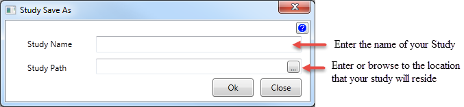
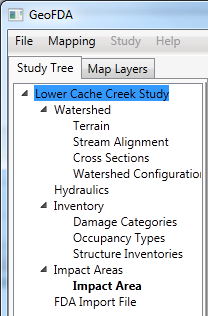
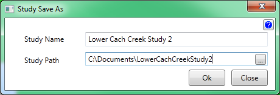
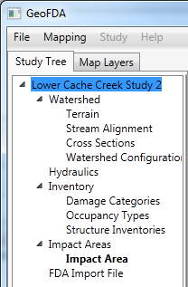

Save As
Save As creates a copy of the project and saves it under a new name.

- Enter the new name for the project.
- Enter or browse to the location the study will reside.
Example: Renaming the Study

Go to file Save As or right click on the study name and select Save As. Enter the new name and location.

After clicking Ok...
